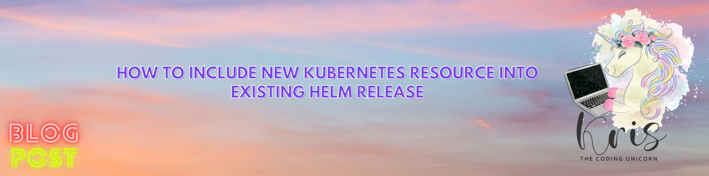

How to Include New Kubernetes Resource Into Existing Helm Release

Helm is extremely useful and efficient when it comes to distributing, installing and upgrading applications hosted in Kubernetes. But sometimes you may have a need to patch an existing release and there is a quick way to do that which I would like to share with you today. A scenario I had to face was that I discovered missing PodDisruptionBudget on one of the production deployments and after this has been fixed in the source code I had therefore a need to add it to the existing Helm release to ensure configuration consistency.
PodDisruptionBudget (PDB) is a very neat Kubernetes feature which makes your application highly available, especially in case of planned cluster disruptions. PDB defines the number of application Pods that can be unavailable at the same time in case of voluntary disruptions. An important point to note here is that the number of Pods that you define as available/unavailable for PDB must be lower than the total count of Pods you have defined to be deployed. You can read more about PDBs here: Disruptions
There are multiple ways to solve this: I could've created and published a new version of the Helm chart or I could've re-built and re-uploaded an existing Helm chart but I didn't want to mess with the original version of the Helm chart so I've decided to go for another solution where I've created a script to automatically apply the PDB to all the relevant Kubernetes deployments and let Helm, that the Kubernetes deployments were created with, "adopt" PDB with help of just a few annotations and labels.
But first things first. Let's freshen up some basics.
What is Helm?
Helm is basically a package manager for Kubernetes - it helps you describe, install and upgrade applications hosted in Kubernetes in an easy and unified way with help of Helm Charts. Helm is a CNCF project and is open-source, maintained by the Helm community on GitHub: Helm community. By using Helm you can deploy a single application in the same way to different environments - development, staging, production, you name it. The only thing you will need to do is to have a separate set of values (values-\[dev/staging/prod\].yaml per environment) where you can define resource allocation depending on what environment the application will be deployed to. The rest of the application definition will be generic and applicable to any deployment environment. Using tools like Helm will minimize probability of human errors and be a great addition to your Kubernetes deployment automation.
Want to know more? Take a look at the official Helm documentation: Helm Docs
Now, let's say that we have deployed a specific version of our test application to production with Helm and realized that we're missing PodDisruptionBudget - we've already fixed this in the source code but how can we patch this to an existing Helm deployment?
Approach described below is applicable for Helm 3, not the earlier version.
How to let existing Helm release “adopt” a new Kubernetes resource and why it's important?
First of all, why would you bother making sure that the Kubernetes resource you're patching the existing deployment with is accounted for by Helm? Well, you could of course just patch your Helm deployment as any regular Kubernetes deployment with kubectl patch or kubectl apply and not bother about Helm specifics at all, but this approach has it's unpleasant consequences:
- If you decide at some point to delete this specific Helm deployment, it will not clean up the resources you have created with
kubectl patchorkubectl applywhich means that you will need to know what resources you have patched manually during lifetime of the deployment and clean those up yourself. - If you have made changes to the Object definition in the source code and then at some point upgrade the patched deployment where the same Object was patched with
kubectl patchorkubectl apply, you may risk getting an error like this:
Error: rendered manifests contain a resource that already exists.
Unable to continue with install: PodDisruptionBudget "mytestapp-pdb" in namespace "mytestapp" exists and cannot be imported into the current release: invalid ownership metadata;
label validation error: missing key "app.kubernetes.io/managed-by": must be set to "Helm";
annotation validation error: missing key "meta.helm.sh/release-name": must be set to "mytestapp-10";
annotation validation error: missing key "meta.helm.sh/release-namespace": must be set to "mytestapp"The error above is pretty much self-explanatory and can be fixed by either deleting the existing resource and re-trying upgrade, or re-patching the existing resource with proper annotations and labels so that it can be registered and managed by Helm - for guidance on how to do that, see more below ;-)
In Helm 3 it's quite easy to include a new Kubernetes Object into the Helm release - you can do that by adding following annotations to the Object definition:
meta.helm.sh/release-name: [name_of_your_Helm_release]-> name of the Helm release, typically the name you define for the application deploymentmeta.helm.sh/release-namespace: [namespace_of_your_Helm_release]-> this one's important in case you're using namespaces in your Kubernetes clusters. If not provided, default namespace will be used
You will also need to add following label to the Object definition:
app.kubernetes.io/managed-by: Helm-> this label lets Helm know that you would like to include current Kubernetes Object into Helm release you're patching
I'll continue illustrating the concept with PDB example. So, knowing about the annotations and labels I need to add to the PDB definition, I've created following definition file - here I'm using placeholders because I would like to show you how patching can be automated for multiple deployments:
# pdb.yaml
apiVersion: policy/v1
kind: PodDisruptionBudget
metadata:
name: [deployment_name]-pdb
namespace: [deployment_namespace]
annotations:
meta.helm.sh/release-name: [deployment_name]
meta.helm.sh/release-namespace: [deployment_namespace]
labels:
app.kubernetes.io/managed-by: Helm
spec:
minAvailable: 50% # This value defines that I want half of the Pods to be available at all times in case of disruptions. For odd counts, like 7, this value will result in 4 Pods always being available
selector:
matchLabels:
[deployment_labels]And we're all set! Now our PDB is ready to be patched to the existing application deployment running in production as well as managed by Helm going forward! But what if we have tens, hundreds or even thousands of application deployments that we need to patch this to? Do we need to create this Object manually for every single deployment?? Not to worry, we can automate it!
I've created following script that will get all the deployments I would like to patch based on the filter I provide and replace the placeholders in the pdb.yaml file we've created above with values related to every individual deployment we're patching. Then it will create a new version of the file (which is also useful in case we want to check the content before creating the new resource) for every deployment and finally apply it in order to create the resource we want - in this case, a PodDisruptionBudget.
# Add-PDB.ps1
# OBS! Ensure that you're connected to the correct Kubernetes cluster BEFORE executing the script
# This filter can be adjusted to filter only the deployments you want to apply PodDisruptionBudget to. Current filter is for the deployments of mytestapp only
$deployments=((kubectl get deployments.apps -A -o json | ConvertFrom-Json).items) | Where-Object {$_.metadata.name -match 'mytestapp'};
foreach($deploy in $deployments){
# 1. For each deployment, get raw content of yaml file and deployment values to update the yaml with
$pdb_yaml = Get-Content $PSScriptRoot/pdb.yaml -Raw
$deploy_name = $deploy.metadata.name
$deploy_ns = $deploy.metadata.namespace
$labels = $deploy.spec.selector.matchLabels
$label_props = $labels | get-member -MemberType NoteProperty
$formatted_labels = ""
# 2. There may be multiple selectorLabels so we need to ensure that those are formatted according to the YAML formatting laws
foreach($labelName in $label_props.Name)
{
# Due to YAML strictness on formatting we'll use this hack to format multiple selector labels in the allowed way
$formatted_labels += " $($labelName): $($labels.$labelName)`n"
}
# 3. Replace placeholders in YAML-file with mytestapp deployment values
$pdb_yaml = $pdb_yaml.Replace('[deployment_name]',$deploy_name).Replace('[deployment_namespace]',$deploy_ns).Replace('[deployment_labels]',$formatted_labels)
$pdb_yaml | Out-File -FilePath "$PSScriptRoot/pdb-$($deploy_name).yaml" -Encoding utf8
# 4. Apply updated YAML-file to add PodDisruptionBudget for current deployment
Write-Output "Applying PDB deployment pdb-$($deploy_name).yaml for deployment $deploy_name"
kubectl apply -f "$PSScriptRoot/pdb-$($deploy_name).yaml"
}Now, if I execute this script on my Kubernetes cluster, it'll create PDB for every deployment of mytestapp which I've used as a filter in the first line of the script above. And PDB will be included into every Helm release that mytestapp deployments have been created with so if I decide to delete one of the deployments with helm uninstall, the respective PDB will be removed as well, thanks to the annotations and labels we've provided in the PDB definition file.
If you would like to see PDB in action, you can simulate a disruption by draining one of the nodes that your application's Pod is running on with following kubectl command:
kubectl drain --delete-emptydir-data --force --ignore-daemonsets <your_node_name>
After executing the command above you should be able to see messages in the console output saying that a Pod can’t be deleted due to potential violation of PodDisruptionBudget Policy. Once a new Pod is scheduled and ready on another node, this alert will disappear and the Pod on the to-be-drained-node will be evicted. You can read more about node draining procedure here: Safely drain a Node
PS C:\> Set-Alias -Name k -Value kubectl
PS C:\> k drain --delete-emptydir-data --force --ignore-daemonsets aks-nodepool1-14745837-vmss000001
node/aks-nodepool1-14745837-vmss000001 cordoned
evicting pod mytestapp/app-1
evicting pod mytestapp/app-2
error when evicting pods/"app-2" -n "mytestapp" (will retry after 5s): Cannot evict pod as it would violate the pod's disruption budget.
pod/app-2 evicted
node/aks-nodepool1-14745837-vmss000001 evictedAdditional resources
Some information I find useful and relevant when working with Kubernetes deployments and Helm:
- Official Helm Docs provide good explanation of main concepts and definitions like Helm Charts and Helm Release here: Using Helm
- I've also mentioned some kubectl commands that I didn't go into much details about but if you're not familiar with those, you can read more about the differences between those in this article: In-place updates of resources
That's it from me this time, thanks for checking in! If this article was helpful, I'd love to hear about it! You can reach out to me on LinkedIn, GitHub or by using the contact form on this page :)
Stay secure, stay safe.
Till we connect again!